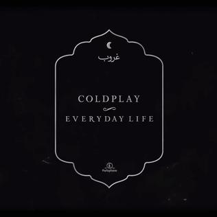

Nov 22 2019, 6:00am
TIM SACCENTI
Coldplay have been written off as a punchline for as long as they've been a band. Following commercial breakthroughs like their 2000 debut Parachutes (which The Guardian wrote was "music to wet your bed to") and 2002's A Rush of Blood to the Head, the band went on to be called "the most insufferable band of the decade" by the New York Times in 2005, when they released X&Y. But the U.K. stadium rockers have never really seemed to mind the criticisms. In fact, they've leaned into becoming pop rock's least self-conscious ambassadors of joy: no chorus is unworthy of a fist-raising, arena-wide sing-along, and no feeling is too earnest to write a record about. You don't write songs titled "Every Teardrop Is a Waterfall" or name an album Mylo Xyloto if you're trying to be cool.
"No chorus is unworthy of a fist-raising, arena-wide sing-along, and no feeling is too earnest to write a record about"
But after their last album of the 2000s, 2008's Brian Eno-assisted Viva La Vida or Death and All His Friends, Coldplay's output this decade has leaned on their most roastable tendencies over what made them so charming in the first place. They've put an exclamation point on vague, life-affirming platitudes: 2011's "Paradise" features the lines, "In the night the stormy night she'll close her eyes / In the night the stormy night away she'd fly / And dream of para-para-paradise / Para-para-paradise / Para-para-paradise." Their highest-charting single of the decade was an EDM crossover collaboration with the Chainsmokers called "Something Just Like This" in 2017. Their live shows, album covers, and press materials are drenched in vibrant, saccharine color. Depending on who you ask, they've either made loving life sound incredibly annoying or they've been an optimistic and goodhearted, if cheesy salve in a tough era.
By all accounts, their new album Everyday Life seems like it could easily continue this deep dive into schmaltz. Coldplay announced the LP via black-and-white subway posters of the band dressed like Mumford and Sons if they decided to truly cosplay ye olde times, complete with banjos and a caption that reads November, 22 1919. In newspaper classifieds they bought around the world (ugh), they explained the full-length would actually be a double album divided into two parts, "Sunrise" and "Sunset." Even more alarming, rumors threatened it would "focus on the more experimental side" of Coldplay, whatever that means. Uproxx critic Steven Hyden took the news to joke on Twitter, calling the album "Kid B-." The band is debuting the collection Friday via a pair of live concerts in Jordan to be streamed on YouTube. They also made headlines recently for postponing touring the record until doing so is "environmentally beneficial."

Everyday Life
Despite all this, Coldplay have actually (and inexplicably) put out their most instantly enjoyable and interesting offering this decade. Though it's a 16 song double LP, it comes in at a leaner runtime than A Rush of Blood to the Head and X&Y. They've abandoned the club-ready affectations of their latter-day discography in favor of songs that feel like they could've been on their most beloved albums from the aughts. This isn't just a retread into the Garden State-era rock-pop, Everyday Life finds Chris Martin and his bandmates gleefully exploring genres from around the world. The brassy single "Arabesque" boasts a pummeling afrobeat inspired rhythm, a sample of Nigerian music icon Fela Kuti incanting "music is the weapon," his son Femi Kuti performing a blistering sax solo, and his son Made Kuti on the horn arrangements. It's a bold statement for the English pop-rockers to include three generations of the Kuti family on a single track, and the result is one of the band's loudest and most danceable songs with no EDM radio pandering in sight.
The experimentation doesn't stop there and it succeeds in varying degrees. 13th century Persian poet Saadi Shirazi is a credited songwriter on the atmospheric "Bani Adam," which samples a reading of his poem of the same name. However, "BrokEn" interpolates American gospel music, with a choir and bluesy acoustic guitars. A promotional video for the album joked, "When the songs are dire, call the gospel choir." Same goes for the doo-wop inflected "Cry Cry Cry." Where Coldplay sound their best is when they sound like early Coldplay. Acoustic number "Old Friends" could've easily been on Parachutes, "Church" finds the band sounding huge without being overbearing, and "Champion of the World" channels their ebullience into resonance in its tribute to the late Frightened Rabbit frontman Scott Hutchison.
Martin swears for the first time in the band's career, employing "fuck" not an insignificant amount of times throughout.
What's jarring on this album is that Coldplay actually get a little edgy, and not in a performative way. Martin swears for the first time in the band's career, employing "fuck" not an insignificant amount of times throughout. This is probably because it's their most political work to date, with songs about the refugee crisis, gun control, police brutality, and racism. On the ham-fisted "Guns," which is about, well, guns. Martin sings, "All the kids make pistols with / Their fingers and their thumbs / Advertise a revolution / Arm it when it comes" and it's pummeling in its lack of ambiguity. When he sings, "Everyone is so fucking crazy" he sings the swear with the same zest as a teenager getting comfortable with cursing around his family for the first time. Lead single "Orphans" directly references the 2018 bombing of Damascus, and "Trouble In Town" samples a disturbing traffic stop from fired Philly cop Philip Nace. It’s sometimes a little much but at least their intentions are pure.
Coldplay are an unavoidable part of popular music. Their endurance is a testament to their ability to withstand cynicism and embrace earnestness no matter what. When those genuine displays of feeling are coupled with Martin, who despite any deserved criticisms the frontman might receive, is unquestionably one of the masters of a heartstring-tugging melody, it's undeniable. Everyday Life isn't going to convert anyone who's always thought they made "bedwetters' music" but it is a document of a band sticking to their strengths without falling into self-parody. They've always tried.